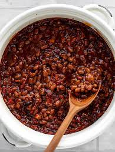

Baked Beans

Description
Canned beans and bacon bits
Ingredients
- 1(21 ounce) canned baked beans
- Half pound bacon, cut into small pieces
- 8 ounces brown sugar
Steps
- Preheat oven to 200 degress C
- Pour beans into a two quart casserole dish
- Place bacon in a 9 inch skillet, completely covering bottom of pan. Spread brown sugar over bacon and cook on medium heat. When bacon grease starts to bubble up through the sugar, transfer to the casserole dish and mix with beans.
- bake in preheated oven for 45 minutes